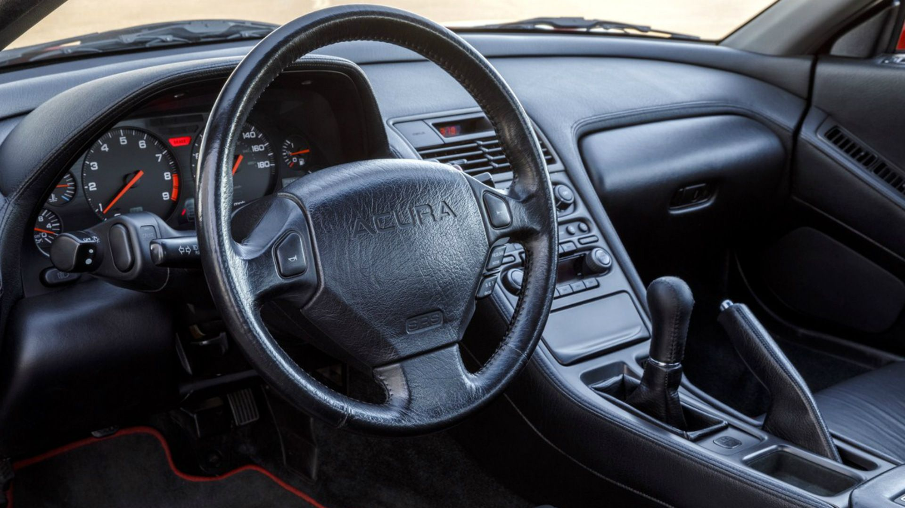
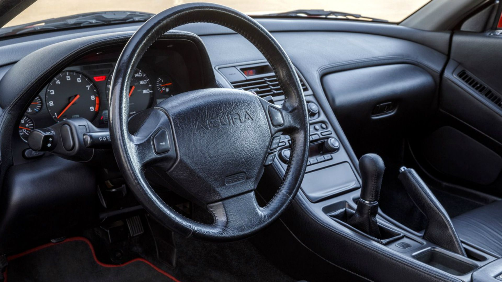
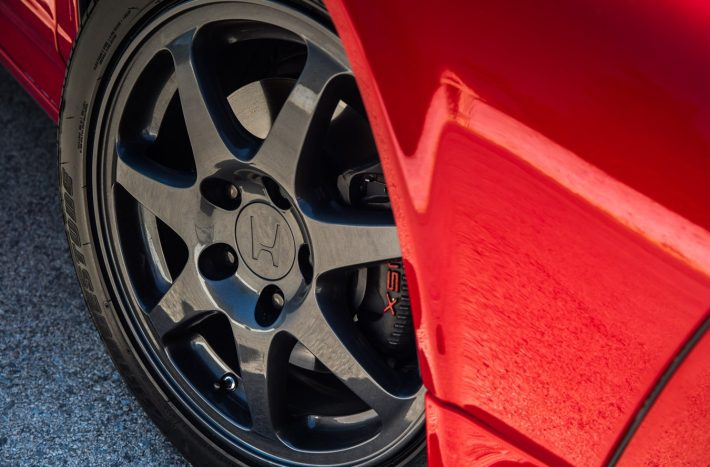
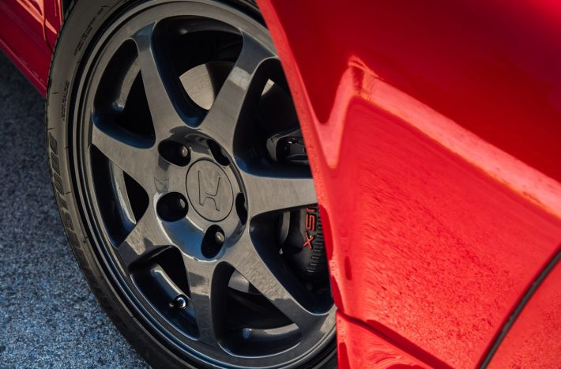
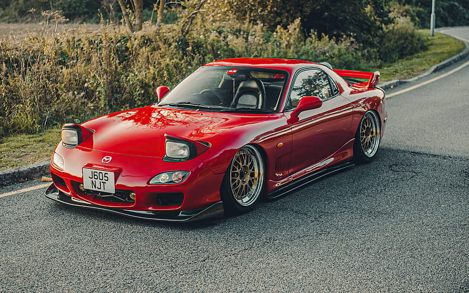
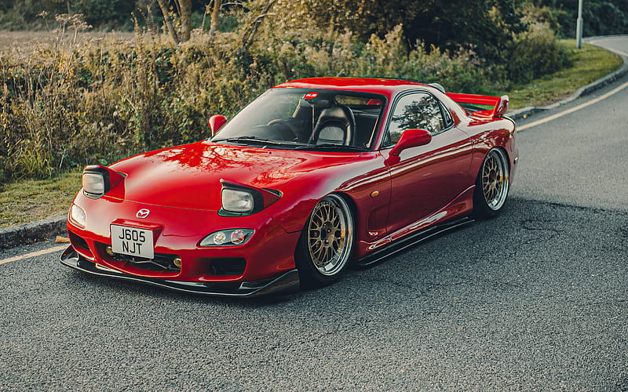

Nosotros
En "Japonese Cars" somos amantes los autos japoneses de la década de 1990. Nuestra misión es explorar y compartir la hermosa cultura automotriz de esa época,
destacando modelos icónicos y la cultura automovilística de la era.
Quedate con nosotros para explorar la historia, el rendimiento y el estilo de estos vehículos que siguen siendo relevantes incluso décadas después de su lanzamiento.
.jpg "hondansx") 

.jpg "hondansx") 

Honda NSX: La Revolución Deportiva Japonesa
El Honda NSX de la década de 1990 es un icono de la ingeniería automotriz japonesa que revolucionó el mundo de los deportivos. Diseñado con la ayuda del legendario piloto de Fórmula 1, Ayrton Senna, el NSX combinó un rendimiento impresionante con la confiabilidad y la comodidad cotidiana.
Con un chasis de aluminio liviano, un motor V6 de 3.0 litros y tracción trasera o, en algunos modelos, tracción integral, el NSX ofreció un manejo preciso y una experiencia de conducción emocionante.
Este automóvil no solo estableció nuevos estándares en términos de equilibrio y agilidad, sino que también demostró que los fabricantes japoneses podían competir con los mejores fabricantes europeos en el mercado de los deportivos de alto rendimiento. Además, su diseño aerodinámico y elegante sigue siendo admirado hasta el día de hoy.
Destacados
Destacados

mazda rx7
El RX-7 de los años 90 es un icónico automóvil deportivo producido por Mazda. Este vehículo es especialmente conocido por su motor rotativo, también llamado Wankel, que lo diferencia de la mayoría de los automóviles convencionales que utilizan motores de pistón. El RX-7 de los años 90, en particular, se produjo en dos generaciones: la tercera generación (FD) que se fabricó desde 1992 hasta 2002.
También destacó por su equilibrada distribución de peso y su manejo ágil, lo que lo convirtió en un automóvil deportivo muy querido por los entusiastas. Fue apreciado por su agilidad en las curvas y su capacidad de aceleración rápida.
En resumen, el Mazda RX-7 de los años 90, especialmente la tercera generación FD, es recordado como un automóvil deportivo icónico gracias a su diseño elegante, motor rotativo y su agilidad en la carretera. Ha ganado un lugar especial en el corazón de los aficionados a los automóviles deportivos y sigue siendo una leyenda en la historia del automovilismo.
 



Curiosidades

En 2001 comenzaba una de las sagas más taquilleras del cine: Fast & Furious y uno de sus principales protagonistas sería un estilizado Mazda RX-7 conocido como Veilside, cuyo kit de carrocería se convertiría en uno de los principales culpables de que hoy en día sea difícil encontrar un RX-7 original.
Pasos de rueda ensanchados, un paragolpes delantero a medio camino entre un Supra Biturbo y un McLaren F1, llantas de gran rodado yun enorme alerón trasero.
El Veilside lanzó a la fama al Mazda RX-7 y se convirtió en un icono inolvidable en el mundo automotriz.